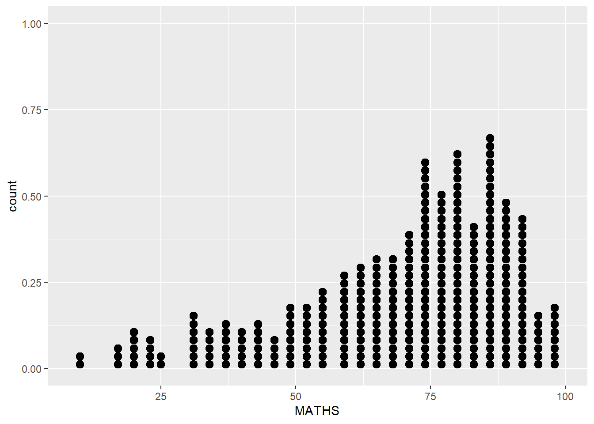
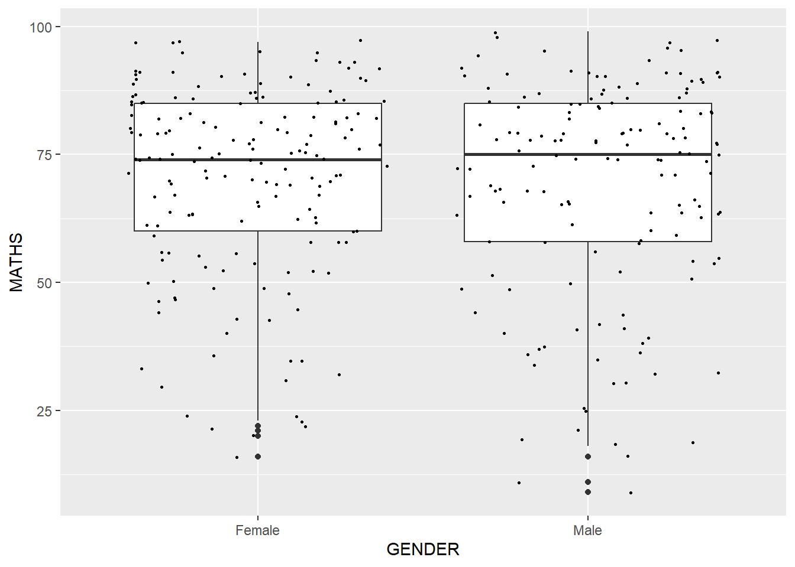

pacman::p_load(tidyverse)Hands-on Exercise 1
Layered Grammar of Graphics
Note: Last modified to include author’s details.
1. Getting Started
1.1 Install and launch R packages
The code chunk below uses p_load() of pacman package to check if tidyverse packages are installed in the computer. If they are, then they will be launched into R.
1.2 Importing the data
The code chunk below imports exam_data.csv into R environment by using read_csv() function of readr package.
readr is one of the tidyverse package.
exam_data <- read_csv("data/Exam_data.csv")
Note
Year end examination grades of a cohort of primary 3 students from a local school.
There are a total of seven attributes. Four of them are categorical data type and the other three are in continuous data type.
The categorical attributes are: ID, CLASS, GENDER and RACE.
The continuous attributes are: MATHS, ENGLISH and SCIENCE.
2. Plotting a simple bar chart
Tip
Use #| eval: false to hide chart (and show code).
Use #| echo: false to show chart (and hide code).
ggplot(data = exam_data,
aes(x = RACE)) +
geom_bar()
3. Practice Time
3.1 R Graphics VS ggplot
hist(exam_data$MATHS)
ggplot(data=exam_data, aes(x = MATHS)) +
geom_histogram(bins=10,
boundary = 100,
color="black",
fill="grey") +
ggtitle("Distribution of Maths scores")
3.2 Exploring Geometric Objects
ggplot(data=exam_data,
aes(x=RACE)) +
geom_bar()
ggplot(data=exam_data,
aes(x = MATHS)) +
geom_dotplot(dotsize = 0.5)
ggplot(data=exam_data,
aes(x = MATHS)) +
geom_histogram()
geom-density() computes and plots kernel density estimate, which is a smoothed version of the histogram. A useful alternative to the histogram for continuous data that comes from an underlying smooth distribution.
ggplot(data=exam_data,
aes(x = MATHS)) +
geom_density()
ggplot(data=exam_data,
aes(y = MATHS,
x= GENDER)) +
geom_boxplot()
geom_violin is designed for creating violin plot and is a useful way of comparing multiple data distributions (as the plots are placed side-by-side to each other). With ordinary density curves, it would be difficult to compare multiple distributions (at once) because the lines visually interfere with each other.
ggplot(data=exam_data,
aes(y = MATHS,
x= GENDER)) +
geom_violin()
geom_point() is especially useful for creating scatterplot.
ggplot(data=exam_data,
aes(x= MATHS,
y=ENGLISH)) +
geom_point()
ggplot(data=exam_data,
aes(y = MATHS,
x= GENDER)) +
geom_boxplot() +
geom_point(position="jitter",
size = 0.5)
Warning
Y-scale in geom_dotplot might be misleading.
3.3 Modifying Geometric Objects
Use geom() function to change the following:
bins argument is used to change the number of bins to 20,
fill argument is used to shade the histogram with #D1F2EB color, and
color argument is used to change the outline colour of the bars in grey30
ggplot(data=exam_data,
aes(x= MATHS)) +
geom_histogram(bins=20,
color="grey30",
fill="#D1F2EB")Use sub-group of aesthetic() - aes() to change the interior colour of histogram (i.e. fill).
ggplot(data=exam_data,
aes(x= MATHS,
fill = GENDER)) +
geom_histogram(bins=20,
color="grey30")
Use geom() function to change the following:
geom_vlineis used to add vertical lines such as mean and mediangeom_hlineis used to add horizontal lines such as mean and median
ggplot(data=exam_data,
aes(x=MATHS)) +
geom_histogram(bins=20,
color="grey30",
fill="#D1F2EB") +
labs(x = "Math Score",
y = "No. of Pupils",
title = "Distribution of Math Scores") +
geom_vline(aes(xintercept=median(exam_data$MATHS, na.rm=T)),
color="grey30", linewidth=1, linetype="dashed") +
geom_vline(aes(xintercept=mean(exam_data$MATHS, na.rm=T)),
colour="red", linewidth=1, linetype="dashed")Use geom() function to change the following:
geom_vlineis used to add vertical linesgeom_hlineis used to add horizontal lines
p <- ggplot(data=exam_data,
aes(x= MATHS, y=ENGLISH)) +
geom_point() +
coord_cartesian(xlim=c(0,100),
ylim=c(0,100)) +
geom_vline(aes(xintercept=50),
color="grey", linewidth=0.8, linetype="dashed") +
geom_hline(aes(yintercept=50),
color="grey", linewidth=0.8, linetype="dashed") +
labs(x = "Math Score",
y = "English Score",
title = "Correlation between English and Math Scores")
pUse geom() function to change the following:
annotatecan be used as an alternative that can reduce the code length
# Add rectangles
p + annotate("rect", xmin=c(0,75), xmax=c(25,100), ymin=c(20,50) , ymax=c(55,100), alpha=0.2, color="blue", fill="blue")# Add segments
p + annotate("segment", x = 0, xend = 100, y = 25, yend = 50, colour = "purple", size=3, alpha=0.6)
# Add arrow
p + annotate("segment", x = 0, xend = 100, y = 25, yend = 50, colour = "pink", size=3, alpha=0.6, arrow=arrow())3.4 Working with stat
The Statistics functions statistically transform data, usually as some form of summary. For example:
frequency of values of a variable (bar graph)
a mean
a confidence limit
There are two ways to use these functions:
add a
stat_()function and override the default geom, oradd a
geom_()function and override the default stat.
ggplot(data=exam_data,
aes(y = MATHS, x= GENDER)) +
geom_boxplot()
The code chunk below adds mean values by using stat_summary() function and overriding the default geom.
ggplot(data=exam_data,
aes(y = MATHS, x= GENDER)) +
geom_boxplot() +
stat_summary(geom = "point",
fun.y="mean",
colour ="red",
size=4)
The code chunk below adding mean values by using geom_() function and overriding the default stat.
ggplot(data=exam_data,
aes(y = MATHS, x= GENDER)) +
geom_boxplot() +
geom_point(stat="summary",
fun.y="mean",
colour ="red",
size=4) 
Adding best fit curve on scatterplot
The interpretability of this graph can be improved by adding a best fit curve. geom_smooth() is used to plot a best fit curve on the scatterplot.
ggplot(data=exam_data,
aes(x= MATHS, y=ENGLISH)) +
geom_point() +
geom_smooth(size=0.5)
3.5 Working with facet
Facetting generates small multiples (sometimes also called trellis plot), each displaying a different subset of the data.
facet_wrap wraps a 1d sequence of panels into 2d. This is generally a better use of screen space than facet_grid because most displays are roughly rectangular.
Example 1 Plotting trellis boxplot using facet_wrap() by GENDER
ggplot(data = exam_data,
aes(x = CLASS,
y = MATHS)) +
geom_boxplot() +
facet_wrap(~ GENDER)
facet_grid() forms a matrix of panels defined by row and column faceting variables. It is most useful when you have two discrete variables, and all combinations of the variables exist in the data.
Example 2 Plotting trellis boxplot using facet_grid() by GENDER
ggplot(data = exam_data,
aes(x = CLASS,
y = MATHS)) +
geom_boxplot() +
facet_grid(~GENDER)
Example 3 Plotting trellis boxplot using facet_grid() by GENDER (stacked horizontal)
ggplot(data = exam_data,
aes(x = CLASS,
y = MATHS)) +
geom_boxplot() +
facet_grid(GENDER ~ .)3.6 Working with coordinates
The Coordinates functions map the position of objects onto the plane of the plot. There are a number of different possible coordinate systems to use, they are:
- [`coord_cartesian()`](https://ggplot2.tidyverse.org/reference/coord_cartesian.html): the default cartesian coordinate systems, where you specify x and y values (e.g. allows you to zoom in or out).
- [`coord_flip()`](https://ggplot2.tidyverse.org/reference/coord_flip.html): a cartesian system with the x and y flipped.
- [`coord_fixed()`](https://ggplot2.tidyverse.org/reference/coord_fixed.html): a cartesian system with a "fixed" aspect ratio (e.g. 1.78 for a "widescreen" plot).
- [`coord_quickmap()`](https://ggplot2.tidyverse.org/reference/coord_map.hggplot(data=exam_data,
aes(x=RACE)) +
geom_bar()
The code chunk below flips the horizontal bar chart into vertical bar chart by using coord_flip().
ggplot(data=exam_data,
aes(x=RACE)) +
geom_bar() +
coord_flip()
The code chunk below fixed both the y-axis and x-axis range from 0-100.
ggplot(data=exam_data,
aes(x= MATHS, y=ENGLISH)) +
geom_point() +
geom_smooth(method=lm,
size=0.5) +
coord_cartesian(xlim=c(0,100),
ylim=c(0,100))
3.7 Working with theme
ggplot(data=exam_data,
aes(x=RACE)) +
geom_bar() +
coord_flip() +
theme_gray()
ggplot(data=exam_data,
aes(x=RACE)) +
geom_bar() +
coord_flip() +
theme_bw()
ggplot(data=exam_data,
aes(x=RACE)) +
geom_bar() +
coord_flip() +
theme_classic()
ggplot(data=exam_data,
aes(x=RACE)) +
geom_bar() +
coord_flip() +
theme_minimal()